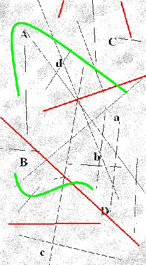

Friday, December the 14th, 2012
back to: title, date or indexes
Over at The Dabbler today I have exhumed, and slightly tweaked, a very long sentence which first appeared as part of the text of Crop Circles : The Crunlop Experiment, an out of print pamphlet from the last century. In the comments, Brit suggests that “Ikea would reduce all that to three simple yet bewildering black-and-white pictures”, which reminded me of the diagram accompanying another Hooting Yard craft project from 2004, to wit:
